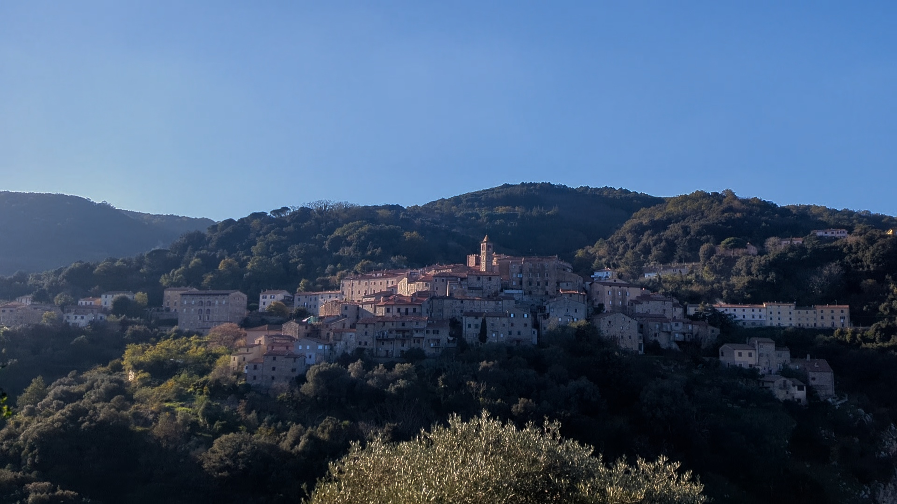
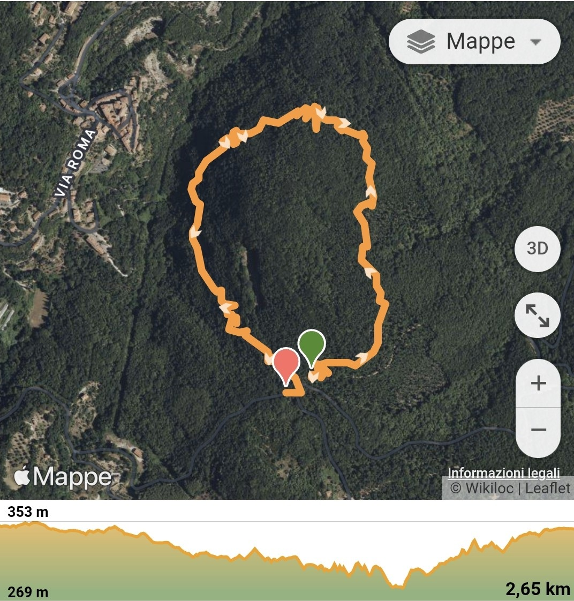
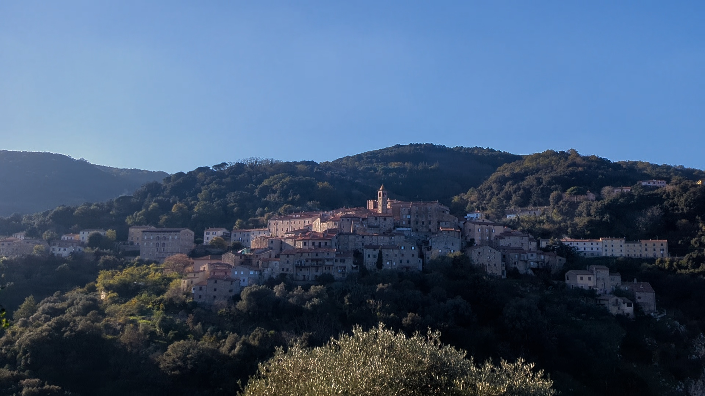
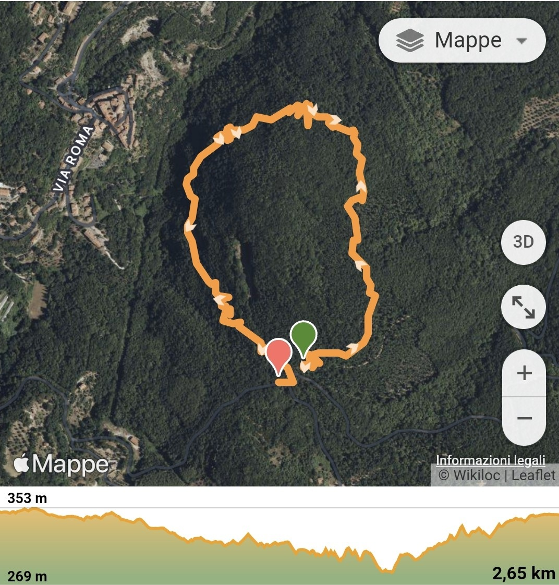

Sassetta
The Village of Sassetta located in the Tuscan countryside, only 20 minutes from the beach, with houses uniquely perched on a hill. The village is made up of beautifully typical Tuscan narrow streets, small squares and spectacular views. The town is famous for its marble which is unique to the area. Close by, thermal waters flow from inland, emerging at almost 50°, offering the possibility to experience this natural form of relaxation at the nearby SPA " la Cerreta Terme" just a few kilometers from the villag
Trekking & MTB
For Nature Lovers, a few km from the town the nature park " Poggio Neri" offers a series of treks with various points of interest and picnic areas. Among these, the "Botanical Route", which is accessible even to people with motor disabilities. The park also hosts the "Forest museum" where examples and information about the daily life and professions of the chestnut pickers are represented, while the "via del carbone" (charcoal path) shows the ancient profession and technique used to make coal. (Click here to view the map ) For the Mountain bikers, the area of "Val di Cornia" is ideal for MTB enthusiasts with its surreal paths and trails that also connect Sassetta to the nearby villages.
Percorso da Campiglia Marittima(27 Km da Sassetta) al Monte Calvi
"Starting from the village of Campiglia, you can reach "Monte Calvi" (Mount Calvi), to enjoy an incredible 360° panoramic view. These paths are located mainly in the woods, with the occasional stunning view of the Etruscan Coast and surrounding islands. On the way back, why not stop in the ancient village of Campiglia and discover its rich history and typical Italian narrow streets. Or maybe to explore 'la Rocca' (the old castle) and enjoy the spectacular landscape, grab a bite at the bakery or try the famous "Schiaccia Campigliese!" The walk is about 4.h but it is suitable for all to enjoy!"
Monte Rotondo
The route is accessible up to half the ring even by disabled people and winds all around Monte Bufalaio. This is the Botanical Route path and is characterized by didactic signs of flora and fauna. A suggestive itinerary, with a panoramic view on the town and an abandoned quarry that, in the past, extracted the now famous Red Sassetta Marble.

 


